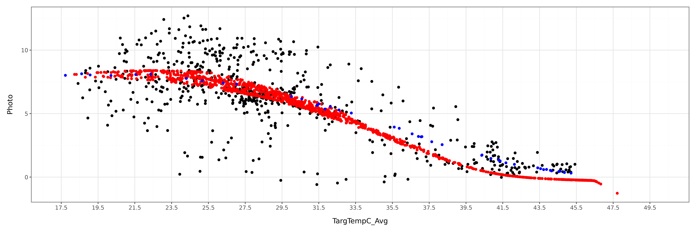
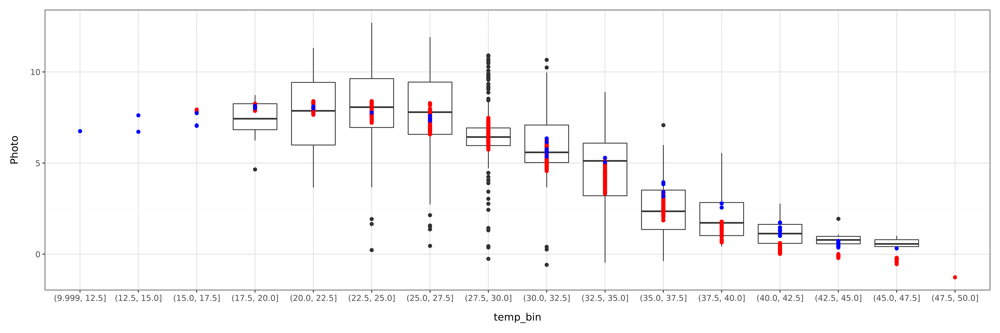
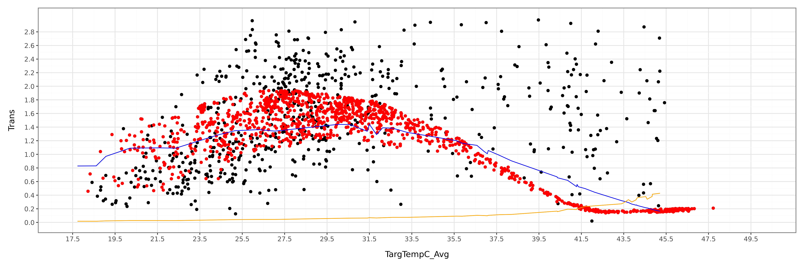
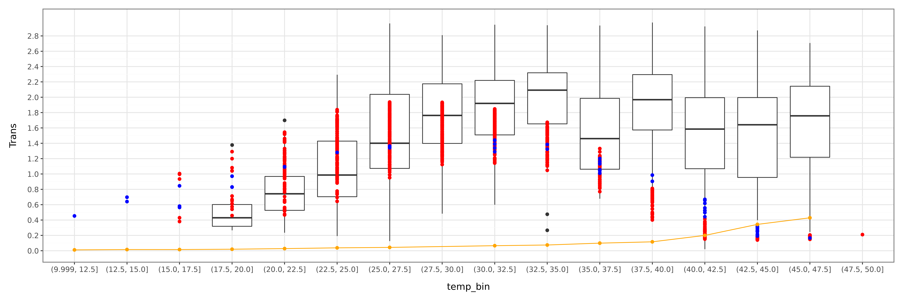
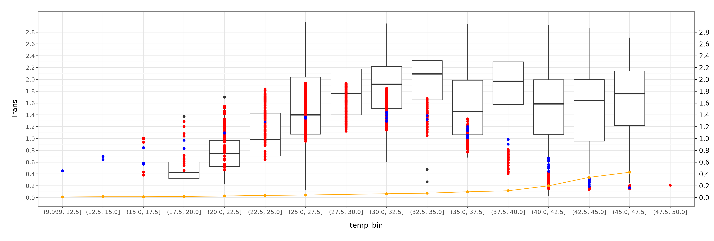
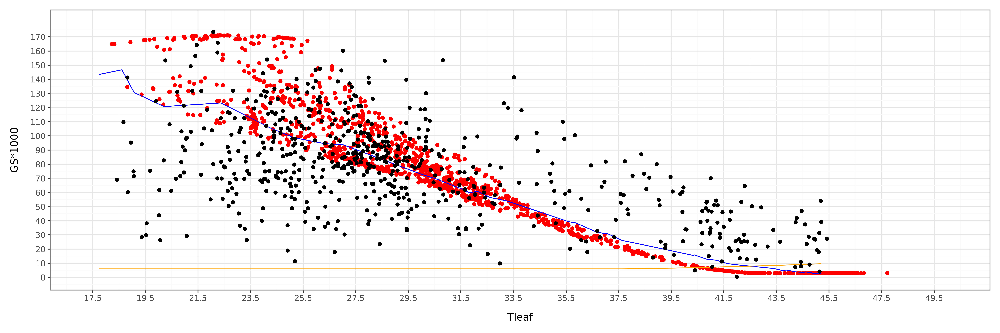

from siuba import *
from plotnine import *
from plotnine import *
import numpy as np, pandas as pd
from itables import to_html_datatable
from IPython.display import HTML, displayTutorial 5: SurEau-Medlyn Basic run
Load modules
from plant_hydraulics.run_sureau import run_sureau
from plant_hydraulics.sureau_climate import *
from plant_hydraulics.utils import potential_PAR
from plant_hydraulics.parameter_classes import (
SurEauVegetationParams,
SurEauSoilParams,
SurEauModelOptions,
)
from plant_hydraulics.utils import (
load_example_data,
)Object initialization
# Model options
opts = SurEauModelOptions(
# Richmond
latitude=-33.5996,
# Meters above sea level
elevation = 24,
# net radiation model: "Linacre" (only option currently)
Rn_formulation="Linacre",
# PET model: "PT" (Priestley-Taylor) or "PM" (Penman-Monteith)
ETP_formulation="PT",
# True → forces a fixed doy=116 (sunny day template)
constant_climate = False,
# which hours to output (0–23 → full day)
time_steps=np.arange(24),
# Print progress to console
print_progress=True,
year_start=2016,
year_end=2016
)# Vegetation parameters
veg_params = SurEauVegetationParams()
# Leaf area index (m²/m²). Higher = more transpiration.
veg_params.LAI_max = 6
veg_params.foliage = "Evergreen"
veg_params.transpiration_model = "Medlyn"
veg_params.g_crown0 = 1e6
# Params from Drake
veg_params.vcmax25 = 34
veg_params.vcmaxha = 51780
veg_params.vcmaxhd = 2e5
veg_params.vcmaxse = 640
veg_params.jmax25 = 60
veg_params.jmaxha = 21640
veg_params.jmaxhd = 2e5
veg_params.jmaxse = 633
veg_params.g1_medlyn = 2.9
veg_params.g0_medlyn = 0.00000001
# ψ at 50% loss of leaf conductance (MPa)
veg_params.P50_VC_leaf = -3.89
# ψ at 50% loss of stem conductance (MPa)
veg_params.P50_VC_stem = -3.89
# Steepness of vulnerability sigmoid (%/MPa)
veg_params.slope_VC_leaf = 50
# ψ at 12% stomatal closure (MPa)
veg_params.P12_gs = -2.18
# ψ at 88% stomatal closure (MPa)
veg_params.P88_gs = -4
# Whole-plant conductance (mmol/m²/s/MPa)
veg_params.k_plant_init = 100
# At 20°C (mmol/m²/s)
veg_params.gmin20 = 4.0
# Temperature where cuticle melts (°C)
veg_params.TPhase_gmin = 38
!!! Calculate DEhydration Q10
veg_params.Q10_1_gmin = 1
# Q10 above TPhase
veg_params.Q10_2_gmin = 3
veg_params.gmin20 = 3soil_params = SurEauSoilParams()Climate
SurEau takes daily climatic data and then creates a hourly dataset
climate_df = load_example_data("sureau_medlyn_daily_climate.csv", sep=",")
#climate_df["DATE"] = pd.to_datetime(climate_df["DATE"], format="%d/%m/%Y").dt.strftime("%Y-%m-%d")
html_str = to_html_datatable(climate_df)
display(HTML(html_str))| Loading ITables v2.8.1 from the internet... (need help?) |
Explore climatic data
hourly_data_from_daily = []
for each_day in range(len(climate_df)):
# Get date
date_str = str(climate_df.iloc[each_day]["DATE"])
# Calculate climate for that day
clim = new_climate_day(climate_df, date_str)
# Compute PET for that day
clim = compute_Rn_and_ETP(clim, veg_params, opts)
# Create hourly climate from daily conditions
ch = new_climate_hourly(clim, opts, veg_params)
#Show data in ch
#print("ch.__dict__ keys:", list(vars(ch).keys()))
# Put everything into frame that works for Sureau
hourly_data_from_daily.append(pd.DataFrame({
"Doy": int(climate_df.iloc[each_day]["DOY"]),
"hour": np.asarray(ch.time, float),
"RG": np.asarray(ch.RG, float),
"RH": np.asarray(ch.RH_air_mean, float),
"PAR_d": np.asarray(ch.PAR, float),
"Tair_d": np.asarray(ch.T_air_mean, float),
"VPD_d": np.asarray(ch.VPD, float),
}))
hourly_data_from_daily = pd.concat(hourly_data_from_daily, ignore_index=True)Run the model
results = run_sureau(
climate_df=climate_df,
veg_params=veg_params,
soil_params=soil_params,
opts=opts,
# Set True to keep deepest layer at field capacity
deep_water=False,
)Year 2016 Day 305
Year 2016 Day 306
Year 2016 Day 307
Year 2016 Day 308
Year 2016 complete. results = results >> filter(_.PAR > 0) >> mutate(e_total = _["E_lim"] + _["E_min"]) >> \
mutate(gres = _["gmin"] + _["gmin_S"])html_str = to_html_datatable(results)
display(HTML(html_str))| Loading ITables v2.8.1 from the internet... (need help?) |
Plot results
raw_plc = load_example_data("drake_plc_data.csv", sep=",")raw_chamber_data = load_example_data("heatwave_raw_data_drake.csv", sep=",")
# Filter data as Drake did
raw_chamber_data = raw_chamber_data >> filter(_.PAR >= 500) >> filter(_.T_treatment == 'ambient')
raw_chamber_data| DateTime_hr | chamber | T_treatment | HWtrt | combotrt | PAR | PPFD_Avg | Tair_al | TargTempC_Avg | VPD | Photo | Trans | FluxCO2 | FluxH2O | LeafArea | Tdiff | leaftoairVPD | gs | Atogs | |
|---|---|---|---|---|---|---|---|---|---|---|---|---|---|---|---|---|---|---|---|
| 42 | 2016-10-29 08:30:00 | C09 | ambient | HW | ambient_HW | 805.4 | 259.073333 | 18.411248 | 18.946667 | 0.261311 | 4.653162 | 0.317972 | 0.079854 | 0.005457 | 17.161261 | 0.535419 | 0.333722 | 0.095281 | 0.048836 |
| 45 | 2016-10-29 09:00:00 | C03 | ambient | HW | ambient_HW | 1243.8 | 1398.156667 | 20.985444 | 24.001667 | 0.436916 | 9.816100 | 0.758170 | 0.121192 | 0.009361 | 12.346251 | 3.016223 | 0.938592 | 0.080777 | 0.121520 |
| 47 | 2016-10-29 09:00:00 | C07 | ambient | HW | ambient_HW | 1453.1 | 1305.076667 | 20.042771 | 23.336000 | 0.363751 | 8.640184 | 0.756307 | 0.126152 | 0.011043 | 14.600664 | 3.293229 | 0.888600 | 0.085112 | 0.101515 |
| 48 | 2016-10-29 09:00:00 | C09 | ambient | HW | ambient_HW | 1556.9 | 1322.333333 | 20.100288 | 22.714000 | 0.341839 | 10.455595 | 0.625009 | 0.179431 | 0.010726 | 17.161261 | 2.613712 | 0.751975 | 0.083116 | 0.125796 |
| 51 | 2016-10-29 09:30:00 | C03 | ambient | HW | ambient_HW | 1630.4 | 1597.200000 | 21.338174 | 24.484667 | 0.494652 | 11.834850 | 0.727829 | 0.146116 | 0.008986 | 12.346251 | 3.146493 | 1.029771 | 0.070679 | 0.167446 |
| ... | ... | ... | ... | ... | ... | ... | ... | ... | ... | ... | ... | ... | ... | ... | ... | ... | ... | ... | ... |
| 2295 | 2016-11-11 15:00:00 | C07 | ambient | HW | ambient_HW | 1138.9 | 342.773333 | 27.244663 | 28.716333 | 1.528418 | 6.530467 | 1.777868 | 0.095349 | 0.025958 | 14.600664 | 1.471671 | 1.853797 | 0.095904 | 0.068094 |
| 2296 | 2016-11-11 15:00:00 | C09 | ambient | HW | ambient_HW | 1099.0 | 1077.433333 | 26.930350 | 29.116000 | 1.432955 | 6.692262 | 1.775116 | 0.114848 | 0.030463 | 17.161261 | 2.185650 | 1.917356 | 0.092581 | 0.072285 |
| 2299 | 2016-11-11 15:30:00 | C03 | ambient | HW | ambient_HW | 989.4 | 252.983333 | 26.396116 | 26.331333 | 1.217014 | 2.138628 | 0.431374 | 0.026404 | 0.005326 | 12.346251 | -0.064782 | 1.203831 | 0.035833 | 0.059683 |
| 2301 | 2016-11-11 15:30:00 | C07 | ambient | HW | ambient_HW | 946.8 | 375.263333 | 26.470588 | 27.694000 | 1.427771 | 6.061805 | 1.729572 | 0.088506 | 0.025253 | 14.600664 | 1.223412 | 1.686123 | 0.102577 | 0.059095 |
| 2302 | 2016-11-11 15:30:00 | C09 | ambient | HW | ambient_HW | 824.5 | 362.280000 | 26.329185 | 28.269667 | 1.369254 | 6.451270 | 1.651240 | 0.110712 | 0.028337 | 17.161261 | 1.940481 | 1.783698 | 0.092574 | 0.069688 |
637 rows × 19 columns
model_predictions = load_example_data("photosyneb_predictions_heatwave_data_drake.csv", sep=",")
model_predictions = model_predictions >> filter(_.PPFD >= 500 )(ggplot()
+ geom_point(raw_chamber_data, aes(x = 'TargTempC_Avg', y = 'Photo'))
+ geom_point(model_predictions, aes(x="Tleaf", y = "ALEAF"), color='red')
+ geom_point(results, aes(x="leaf_temperature", y = "An"), color='blue')
+ theme_bw()
+ theme(figure_size=(15, 5), dpi=300)
+ scale_x_continuous(
breaks=np.arange(17.5, 50, 2),
limits=[17.5, 50])
)/var/home/ecamo19/Documents/projects/modeling/plant_hydraulics/.pixi/envs/default/lib/python3.14/site-packages/plotnine/layer.py:374: PlotnineWarning: geom_point : Removed 7 rows containing missing values.
/var/home/ecamo19/Documents/projects/modeling/plant_hydraulics/.pixi/envs/default/lib/python3.14/site-packages/plotnine/layer.py:374: PlotnineWarning: geom_point : Removed 5 rows containing missing values.
/var/home/ecamo19/Documents/projects/modeling/plant_hydraulics/.pixi/envs/default/lib/python3.14/site-packages/plotnine/layer.py:374: PlotnineWarning: geom_point : Removed 6 rows containing missing values.
step = 2.5
lo = np.floor(10 / step) * step
hi = np.ceil (55 / step) * step
breaks = np.arange(lo, hi + step, step)
raw_chamber_data['temp_bin'] = pd.cut(
raw_chamber_data['TargTempC_Avg'], bins=breaks, include_lowest=True
)
model_predictions['temp_bin'] = pd.cut(
model_predictions['Tleaf'], bins=breaks, include_lowest=True
)
results['temp_bin'] = pd.cut(
results['leaf_temperature'], bins=breaks, include_lowest=True
)
(ggplot()
+ geom_boxplot(raw_chamber_data, aes(x='temp_bin', y='Photo'))
+ geom_point(model_predictions, aes(x='temp_bin', y = "ALEAF"), color='red')
+ geom_point(results, aes(x='temp_bin', y = "An"), color='blue')
+ theme_bw()
+ theme(figure_size=(15, 5), dpi=300)
)/var/home/ecamo19/Documents/projects/modeling/plant_hydraulics/.pixi/envs/default/lib/python3.14/site-packages/plotnine/layer.py:293: PlotnineWarning: stat_boxplot : Removed 7 rows containing non-finite values.
(ggplot()
+ geom_point(raw_chamber_data, aes(x = 'TargTempC_Avg', y = 'Trans'))
+ geom_point(model_predictions, aes(x="Tleaf", y = "ELEAF"), color='red')
+ geom_line(results, aes(x="leaf_temperature", y = "E_lim"), color='blue')
+ geom_line(results, aes(x="leaf_temperature", y = "E_min"), color='orange')
+ ylim(0,3.1)
+ theme_bw()
+ theme(figure_size=(15, 5), dpi=300)
+ scale_y_continuous(
breaks=np.arange(0, 3, 0.2),
limits=[0, 3])
+ scale_x_continuous(
breaks=np.arange(17.5, 50, 2),
limits=[17.5, 50])
)/var/home/ecamo19/Documents/projects/modeling/plant_hydraulics/.pixi/envs/default/lib/python3.14/site-packages/plotnine/scales/scales.py:48: PlotnineWarning: Scale for 'y' is already present.
Adding another scale for 'y',
which will replace the existing scale.
/var/home/ecamo19/Documents/projects/modeling/plant_hydraulics/.pixi/envs/default/lib/python3.14/site-packages/plotnine/layer.py:374: PlotnineWarning: geom_point : Removed 20 rows containing missing values.
/var/home/ecamo19/Documents/projects/modeling/plant_hydraulics/.pixi/envs/default/lib/python3.14/site-packages/plotnine/layer.py:374: PlotnineWarning: geom_point : Removed 5 rows containing missing values.
/var/home/ecamo19/Documents/projects/modeling/plant_hydraulics/.pixi/envs/default/lib/python3.14/site-packages/plotnine/geoms/geom_path.py:100: PlotnineWarning: geom_path: Removed 6 rows containing missing values.
/var/home/ecamo19/Documents/projects/modeling/plant_hydraulics/.pixi/envs/default/lib/python3.14/site-packages/plotnine/geoms/geom_path.py:100: PlotnineWarning: geom_path: Removed 6 rows containing missing values.
step = 2.5
lo = np.floor(10 / step) * step
hi = np.ceil (55 / step) * step
breaks = np.arange(lo, hi + step, step)
raw_chamber_data['temp_bin'] = pd.cut(
raw_chamber_data['TargTempC_Avg'], bins=breaks, include_lowest=True
)
model_predictions['temp_bin'] = pd.cut(
model_predictions['Tleaf'], bins=breaks, include_lowest=True
)
results['temp_bin'] = pd.cut(
results['leaf_temperature'], bins=breaks, include_lowest=True
)emin_bin = (results.groupby('temp_bin', observed=True)['E_min']
.mean().reset_index()) # one E_min per bin
(ggplot()
+ geom_boxplot(raw_chamber_data, aes(x='temp_bin', y='Trans'))
+ geom_point(model_predictions, aes(x='temp_bin', y='ELEAF'), color='red')
+ geom_point(results, aes(x='temp_bin', y='E_lim'), color='blue')
+ geom_line (emin_bin, aes(x='temp_bin', y='E_min', group=1), color='orange')
+ geom_point(emin_bin, aes(x='temp_bin', y='E_min'), color='orange')
+ theme_bw()
+ scale_y_continuous(
breaks=np.arange(0, 3, 0.2),
limits=[0, 3])
+ theme(figure_size=(15, 5), dpi=300)
)/var/home/ecamo19/Documents/projects/modeling/plant_hydraulics/.pixi/envs/default/lib/python3.14/site-packages/plotnine/layer.py:293: PlotnineWarning: stat_boxplot : Removed 20 rows containing non-finite values.
p = (ggplot()
+ geom_boxplot(raw_chamber_data, aes(x='temp_bin', y='Trans'))
+ geom_point(model_predictions, aes(x='temp_bin', y='ELEAF'), color='red')
+ geom_point(results, aes(x='temp_bin', y='E_lim'), color='blue')
+ geom_line (emin_bin, aes(x='temp_bin', y='E_min', group=1), color='orange')
+ geom_point(emin_bin, aes(x='temp_bin', y='E_min'), color='orange')
+ theme_bw()
+ scale_y_continuous(
breaks=np.arange(0, 3, 0.2),
limits=[0, 3])
+ theme(figure_size=(15, 5), dpi=300)
)
fig = p.draw()
ax = fig.axes[0]
secax = ax.secondary_yaxis("right") # identity transform = same scale
secax.set_ylabel("") # name = NULL
secax.set_yticks(ax.get_yticks()) # force identical breaks (labels = waiver()
fig/var/home/ecamo19/Documents/projects/modeling/plant_hydraulics/.pixi/envs/default/lib/python3.14/site-packages/plotnine/layer.py:293: PlotnineWarning: stat_boxplot : Removed 20 rows containing non-finite values.
(ggplot() +
geom_point(model_predictions, aes(x="Tleaf", y = "GS*1000"), color='red')
+ geom_line(results, aes(x="leaf_temperature", y = "gs_lim"), color='blue')
+ geom_line(results, aes(x="leaf_temperature", y = "gres"), color='orange')
+ geom_point(raw_chamber_data, aes(x = 'TargTempC_Avg', y = 'gs*1000'))
+ scale_y_continuous(
breaks=np.arange(0, 180, 10),
limits=[0, 180])
+ theme_bw()
+ theme(figure_size=(15, 5), dpi=300)
+ scale_x_continuous(
breaks=np.arange(17.5, 50, 2),
limits=[17.5, 50])
)/var/home/ecamo19/Documents/projects/modeling/plant_hydraulics/.pixi/envs/default/lib/python3.14/site-packages/plotnine/layer.py:374: PlotnineWarning: geom_point : Removed 5 rows containing missing values.
/var/home/ecamo19/Documents/projects/modeling/plant_hydraulics/.pixi/envs/default/lib/python3.14/site-packages/plotnine/geoms/geom_path.py:100: PlotnineWarning: geom_path: Removed 6 rows containing missing values.
/var/home/ecamo19/Documents/projects/modeling/plant_hydraulics/.pixi/envs/default/lib/python3.14/site-packages/plotnine/geoms/geom_path.py:100: PlotnineWarning: geom_path: Removed 6 rows containing missing values.
/var/home/ecamo19/Documents/projects/modeling/plant_hydraulics/.pixi/envs/default/lib/python3.14/site-packages/plotnine/layer.py:374: PlotnineWarning: geom_point : Removed 15 rows containing missing values.
gres_bin = (results.groupby('temp_bin', observed=True)['gres']
.mean().reset_index())
(ggplot()
+ geom_boxplot(raw_chamber_data, aes(x='temp_bin', y='(gs*1000)'))
+ geom_point(model_predictions, aes(x='temp_bin', y='GS*1000'), color='red')
+ geom_point(results, aes(x='temp_bin', y='gs_bound'), color='blue')
+ geom_line (gres_bin, aes(x='temp_bin', y='gres', group=1), color='orange')
+ geom_point(gres_bin, aes(x='temp_bin', y='gres'), color='orange')
+ theme_bw()
+ scale_y_continuous(
breaks=np.arange(0, 180, 10),
limits=[0, 180]
)
+ theme(figure_size=(15, 5))
)--------------------------------------------------------------------------- NameError Traceback (most recent call last) File ~/Documents/projects/modeling/plant_hydraulics/.pixi/envs/default/lib/python3.14/site-packages/plotnine/mapping/evaluation.py:165, in evaluate(aesthetics, data, env) 164 try: --> 165 new_val = env.eval(col, inner_namespace=data) 166 except Exception as e: File ~/Documents/projects/modeling/plant_hydraulics/.pixi/envs/default/lib/python3.14/site-packages/plotnine/mapping/_env.py:71, in Environment.eval(self, expr, inner_namespace) 70 code = _compile_eval(expr) ---> 71 return eval( 72 code, {}, StackedLookup([inner_namespace] + self.namespaces) 73 ) File <string-expression>:1 ----> 1 'Could not get source, probably due dynamically evaluated source code.' NameError: name 'log' is not defined The above exception was the direct cause of the following exception: PlotnineError Traceback (most recent call last) File ~/Documents/projects/modeling/plant_hydraulics/.pixi/envs/default/lib/python3.14/site-packages/plotnine/ggplot.py:172, in ggplot._repr_mimebundle_(self, include, exclude) 169 self.theme = self.theme.to_retina() 171 buf = BytesIO() --> 172 self.save(buf, "png" if format == "retina" else format, verbose=False) 173 figure_size_px = self.theme._figure_size_px 174 return get_mimebundle(buf.getvalue(), format, figure_size_px) File ~/Documents/projects/modeling/plant_hydraulics/.pixi/envs/default/lib/python3.14/site-packages/plotnine/ggplot.py:681, in ggplot.save(self, filename, format, path, width, height, units, dpi, limitsize, verbose, **kwargs) 632 def save( 633 self, 634 filename: Optional[str | Path | BytesIO] = None, (...) 643 **kwargs: Any, 644 ): 645 """ 646 Save a ggplot object as an image file 647 (...) 679 Additional arguments to pass to matplotlib `savefig()`. 680 """ --> 681 sv = self.save_helper( 682 filename=filename, 683 format=format, 684 path=path, 685 width=width, 686 height=height, 687 units=units, 688 dpi=dpi, 689 limitsize=limitsize, 690 verbose=verbose, 691 **kwargs, 692 ) 694 with plot_context(self).rc_context: 695 sv.figure.savefig(**sv.kwargs) File ~/Documents/projects/modeling/plant_hydraulics/.pixi/envs/default/lib/python3.14/site-packages/plotnine/ggplot.py:629, in ggplot.save_helper(self, filename, format, path, width, height, units, dpi, limitsize, verbose, **kwargs) 626 if dpi is not None: 627 self.theme = self.theme + theme(dpi=dpi) --> 629 figure = self.draw(show=False) 630 return mpl_save_view(figure, fig_kwargs) File ~/Documents/projects/modeling/plant_hydraulics/.pixi/envs/default/lib/python3.14/site-packages/plotnine/ggplot.py:306, in ggplot.draw(self, show) 304 with plot_context(self, show=show): 305 figure = self._setup() --> 306 self._build() 308 # setup 309 self.axs = self.facet.setup(self) File ~/Documents/projects/modeling/plant_hydraulics/.pixi/envs/default/lib/python3.14/site-packages/plotnine/ggplot.py:379, in ggplot._build(self) 375 layout.setup(layers, self) 377 # Compute aesthetics to produce data with generalised 378 # variable names --> 379 layers.compute_aesthetics(self) 381 # Transform data using all scales 382 layers.transform(scales) File ~/Documents/projects/modeling/plant_hydraulics/.pixi/envs/default/lib/python3.14/site-packages/plotnine/layer.py:485, in Layers.compute_aesthetics(self, plot) 483 def compute_aesthetics(self, plot: ggplot): 484 for l in self: --> 485 l.compute_aesthetics(plot) File ~/Documents/projects/modeling/plant_hydraulics/.pixi/envs/default/lib/python3.14/site-packages/plotnine/layer.py:269, in layer.compute_aesthetics(self, plot) 262 def compute_aesthetics(self, plot: ggplot): 263 """ 264 Return a dataframe where the columns match the aesthetic mappings 265 266 Transformations like 'factor(cyl)' and other 267 expression evaluation are made in here 268 """ --> 269 evaled = evaluate(self.mapping._starting, self.data, plot.environment) 270 evaled_aes = aes(**{str(col): col for col in evaled}) 271 plot.scales.add_defaults(evaled, evaled_aes) File ~/Documents/projects/modeling/plant_hydraulics/.pixi/envs/default/lib/python3.14/site-packages/plotnine/mapping/evaluation.py:168, in evaluate(aesthetics, data, env) 166 except Exception as e: 167 msg = _TPL_EVAL_FAIL.format(ae, col, str(e)) --> 168 raise PlotnineError(msg) from e 170 try: 171 evaled[ae] = new_val PlotnineError: "Could not evaluate the 'y' mapping: 'log(gs*1000)' (original error: name 'log' is not defined)"
<plotnine.ggplot.ggplot object at 0x7f6c21a05710>(raw_plc >> filter(_.HW_treatment == "heatwave") >>
select('T_treatment', 'HW_treatment', 'plc')
)| T_treatment | HW_treatment | plc | |
|---|---|---|---|
| 4 | ambient | heatwave | 7.159086 |
| 5 | ambient | heatwave | 6.325573 |
| 6 | elevated | heatwave | 7.594950 |
| 7 | elevated | heatwave | 3.176804 |
| 12 | ambient | heatwave | 7.540274 |
| 13 | ambient | heatwave | 6.877202 |
| 16 | ambient | heatwave | 2.091609 |
| 17 | ambient | heatwave | 6.171386 |
| 18 | elevated | heatwave | 0.141553 |
| 19 | elevated | heatwave | 0.547783 |
| 22 | elevated | heatwave | 0.834611 |
| 23 | elevated | heatwave | 0.009616 |
| 28 | ambient | heatwave | 7.962911 |
| 29 | ambient | heatwave | 10.545035 |
| 30 | elevated | heatwave | 2.116451 |
| 31 | elevated | heatwave | 6.023741 |
| 36 | ambient | heatwave | 12.800527 |
| 37 | ambient | heatwave | 15.382486 |
| 40 | ambient | heatwave | 6.726526 |
| 41 | ambient | heatwave | 11.251698 |
| 42 | elevated | heatwave | 1.294043 |
| 43 | elevated | heatwave | 1.166225 |
| 46 | elevated | heatwave | 4.157611 |
| 47 | elevated | heatwave | 0.071176 |
(ggplot()
+ geom_point(raw_chamber_data, aes(x = 'T_air', y = 'PLC_leaf'))
)
raw_chamber_data| DateTime_hr | chamber | T_treatment | HWtrt | combotrt | PAR | PPFD_Avg | Tair_al | TargTempC_Avg | VPD | Photo | Trans | FluxCO2 | FluxH2O | LeafArea | Tdiff | leaftoairVPD | gs | Atogs | temp_bin | |
|---|---|---|---|---|---|---|---|---|---|---|---|---|---|---|---|---|---|---|---|---|
| 42 | 2016-10-29 08:30:00 | C09 | ambient | HW | ambient_HW | 805.4 | 259.073333 | 18.411248 | 18.946667 | 0.261311 | 4.653162 | 0.317972 | 0.079854 | 0.005457 | 17.161261 | 0.535419 | 0.333722 | 0.095281 | 0.048836 | (17.5, 20.0] |
| 45 | 2016-10-29 09:00:00 | C03 | ambient | HW | ambient_HW | 1243.8 | 1398.156667 | 20.985444 | 24.001667 | 0.436916 | 9.816100 | 0.758170 | 0.121192 | 0.009361 | 12.346251 | 3.016223 | 0.938592 | 0.080777 | 0.121520 | (22.5, 25.0] |
| 47 | 2016-10-29 09:00:00 | C07 | ambient | HW | ambient_HW | 1453.1 | 1305.076667 | 20.042771 | 23.336000 | 0.363751 | 8.640184 | 0.756307 | 0.126152 | 0.011043 | 14.600664 | 3.293229 | 0.888600 | 0.085112 | 0.101515 | (22.5, 25.0] |
| 48 | 2016-10-29 09:00:00 | C09 | ambient | HW | ambient_HW | 1556.9 | 1322.333333 | 20.100288 | 22.714000 | 0.341839 | 10.455595 | 0.625009 | 0.179431 | 0.010726 | 17.161261 | 2.613712 | 0.751975 | 0.083116 | 0.125796 | (22.5, 25.0] |
| 51 | 2016-10-29 09:30:00 | C03 | ambient | HW | ambient_HW | 1630.4 | 1597.200000 | 21.338174 | 24.484667 | 0.494652 | 11.834850 | 0.727829 | 0.146116 | 0.008986 | 12.346251 | 3.146493 | 1.029771 | 0.070679 | 0.167446 | (22.5, 25.0] |
| ... | ... | ... | ... | ... | ... | ... | ... | ... | ... | ... | ... | ... | ... | ... | ... | ... | ... | ... | ... | ... |
| 2295 | 2016-11-11 15:00:00 | C07 | ambient | HW | ambient_HW | 1138.9 | 342.773333 | 27.244663 | 28.716333 | 1.528418 | 6.530467 | 1.777868 | 0.095349 | 0.025958 | 14.600664 | 1.471671 | 1.853797 | 0.095904 | 0.068094 | (27.5, 30.0] |
| 2296 | 2016-11-11 15:00:00 | C09 | ambient | HW | ambient_HW | 1099.0 | 1077.433333 | 26.930350 | 29.116000 | 1.432955 | 6.692262 | 1.775116 | 0.114848 | 0.030463 | 17.161261 | 2.185650 | 1.917356 | 0.092581 | 0.072285 | (27.5, 30.0] |
| 2299 | 2016-11-11 15:30:00 | C03 | ambient | HW | ambient_HW | 989.4 | 252.983333 | 26.396116 | 26.331333 | 1.217014 | 2.138628 | 0.431374 | 0.026404 | 0.005326 | 12.346251 | -0.064782 | 1.203831 | 0.035833 | 0.059683 | (25.0, 27.5] |
| 2301 | 2016-11-11 15:30:00 | C07 | ambient | HW | ambient_HW | 946.8 | 375.263333 | 26.470588 | 27.694000 | 1.427771 | 6.061805 | 1.729572 | 0.088506 | 0.025253 | 14.600664 | 1.223412 | 1.686123 | 0.102577 | 0.059095 | (27.5, 30.0] |
| 2302 | 2016-11-11 15:30:00 | C09 | ambient | HW | ambient_HW | 824.5 | 362.280000 | 26.329185 | 28.269667 | 1.369254 | 6.451270 | 1.651240 | 0.110712 | 0.028337 | 17.161261 | 1.940481 | 1.783698 | 0.092574 | 0.069688 | (27.5, 30.0] |
637 rows × 20 columns